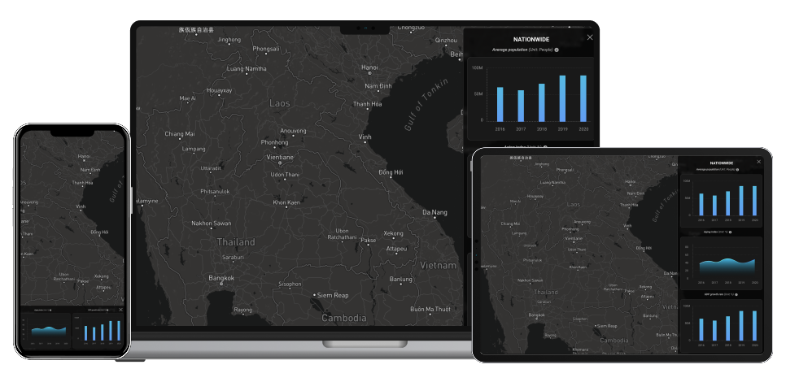
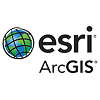

If you’re a business that relies heavily on Geographic Information Systems or GIS and you want to build solutions for your business with this technology then our GIS Software Development company is the perfect technology provider for you. We help businesses like you with creating highly scalable GIS software solutions where you can connect your GIS hardware, software and data to seamlessly capture, manage, analyze and display geographically referenced information. We specialize in building GIS software that is customized and enables you to visualize and interpret spatial data which allows you to make informed decisions. We also specialize in providing you with GIS software solutions that are tailored to your unique requirements as a business and address spatial challenges across various different industries.

Exceptional GIS Software Development Services for Innovative Founders
As a leading GIS Software Development company we provide our clients with a comprehensive suite of services that cover all your needs in terms of scalable GIS software. We can help you design and implement customized GIS applications that are tailored to the specific needs of your organization. We can help you develop highly user friendly interfaces that enhance data interaction and visualization for seamless operations. Our focus is also strong when it comes to ensuring that your applications are scalable and can accommodate your growing datasets as your user demand grows. Additionally, we also can help you with GIS integration services where we can enable you to integrate GIS capabilities into the enterprise systems you already use like ERPs, CRMs and asset management platforms. As a trusted GIS Software Development we can also help you build robust databases for storing and managing spatial data efficiently along with the required data validation and quality assurance processes to maintain the integrity of your data.
End-to-End GIS Software Development company for Modern Solutions
We bring to the table deep expertise and experience for building GIS software for your different business use cases. We are able to do this because of a team of highly seasoned GIS professionals who have years of experience in building these systems for a variety of industries. Our teams and processes always factor in the latest trends in GIS technologies as a leader in GIS Software Development with a client centric approach that puts deep emphasis on collaboration. We follow an agile development process that puts collaboration first and ensures that you are involved at every stage of the project. We specialize in building customized GIS software for your business factoring in the unique requirements and challenges that you might have as a business. We also ensure that our solutions are on the cutting edge of technology and develop innovative strategies and products for your business in GIS.
Access GIS Application Development Experts
Our goal is to help you build feature rich solutions as a GIS Software Development that you can use to tackle the industry you’re in. We can help you create seamless GIS applications with features like advanced mapping, geographical analytics and data visualization. We can implement interactive tools into your GIS software like for example drawing, measurements and layer control which further enhances your user experience. We also ensure that your applications are highly accessible and we can develop responsive and secure GIS applications on multiple platforms like mobile, web and desktop. Our services are tailored to the kind of business you have which means that we can build you both native apps and cross platform apps so that you can be in control of your customer experience as well as your budget. As an established GIS Software Development we can also help you integrate your software with external solutions for enhanced functionalities. We can easily enable interoperability for your GIS software and allow it to seamlessly work with industry specific tools like CAD, enterprise software, remote sensing and IoT devices.
Seamless Custom GIS App Development Services for Enterprises
Our team is experienced and trained in building highly customized GIS software solutions that are tailored to meet the specific needs of the industry you operate in. We can help you develop GIS software that is tailored for industries like urban planning, agriculture, logistics and environmental monitoring. As an expert GIS Software Development we also specialize in building geospatial features like predictive analytics, hazard mapping and route optimization. Additionally, we also put strong emphasis on the user experience of your applications and implement a curated UX design that enhances your usability and efficiency. Our team can also help you build advanced solutions that can support custom data processing and visualization with compatibility with data formats such as LiDAR, raster imagery and real time data feeds from sensors. As a GIS application development services company, we ensure that your solutions are secure and compliant with regulatory standards like GDPR, HIPAA and ISO 27001 for protection of data.
Advanced GIS Mapping Software Solution for Businesses
As a leading GIS Software Development we can help you build advanced mapping solutions for enhanced spatial visualization. This includes things like creating interactive maps that allow users to explore and interact with spatial data with features like zooming, panning and layer toggling for enhancing the user experience of your software. When coupled with data updates in real time this makes for a further enhancement of the user experience. 3D visualization is also another advanced feature we can integrate into your software where you can allow your users to visualize terrain models, urban infrastructure and environmental changes seamlessly. As an experienced GIS Software Development we can also help you with geocoding and reverse geocoding where you can convert addresses into geographical coordinates to enable services that are location based. We can also help you integrate data from live sources like GPS, IoT sensors and satellite imagery to develop solutions for tasks like monitoring fleet movements, environmental changes and emergency response.
Enhanced GIS Development Services for Forward-Thinking Startups
We are an industry leading provider of GIS software solutions for businesses of all sizes and requirements. Our offerings include custom software development for GIS which can work seamlessly across mobile, web, and desktop with advanced solutions for enterprises. Our GIS Software Development includes developing cloud based GIS applications for seamless access across multiple devices through the web. We have a team of experts that’s proficient in frameworks like Leaflet, OpenLayers and Mapbox for interactive web mapping. We can also help you build native and cross platform GIS applications for Android and iOS platforms with additional offline functionality for tasks like field data collection and navigation in remote areas with downloaded data. Our expert services also include solutions for enterprises and we can integrate your GIS software into other software that you might be using like ERPs and CRMs. Our GIS Software Development services also include the advanced use of AI for your applications where we can use machine learning and AI systems to automate tasks and to recognize spatial patterns.
High-Quality GIS Integration Services for Cutting-Edge Solutions
As part of our end to end development services for GIS software we can help you integrate your application with various services and devices like IoT sensor networks. If you need to monitor the environment, track assets and build smart cities we can connect your GIS software with real time IoT sensors for a seamless experience. We make use of technologies like MQTT, WebSockets and REST APIs for the seamless flow of data between your GIS software IoT sensors. As a trusted GIS Software Development we can also integrate your GIS software with various GIS and business intelligence tools like Tableau, Power BI and Qlik for accessing advanced spatial analytics. We can also implement AI powered functionality for your GIS software like AI driven geographical analysis, training ML models using Geographical data to predict natural disasters, optimizing logistics and detecting anomalies.
Hire GIS developers
We provide you with flexible staff augmentation services where you can hire our GIS specialists and integrate them into your team for seamless expansion. Our experts are trained extensively in GIS technologies and can help you build scalable solutions at faster turnaround times.
Our Detailed GIS Software Development Process
As an established GIS Software Development we implement a structured and straightforward process for building your solutions which starts from strategy and consulting to full scale deployment.
- We conduct in depth consultations with you to understand your objectives and challenges as a business.
- We also define data sources, interaction points and compliance requirements.
- We identify the key GIS functionalities you will need like mapping, geocoding and spatial analytics.
- At this stage we help you choose the appropriate GIS software architecture.
- We design scalable and secure database structures for the efficient storage of spatial data.
- As an experienced GIS Software Development we also plan the user interface and user experience.
- At this stage we create the frontend and backend components using various GIS frameworks.
- Then we implement APIs so that your app can communicate with third party GIS and business solutions.
- The next step is to ensure that your application is responsive and optimized for performance even when dealing with large datasets.
- We put all our solutions through a strict regimen of testing which includes functional, performance and security testing for GIS applications.
- We also verify that your GIS software is consistent across different devices and platforms as an expert GIS Software Development company.
- We also implement automated testing rounds so that your GIS workflows can improve in reliability over time.
- At this stage we deploy your GIS applications with the proper documentation and training for end users.
- We also provide a free period of maintenance and updates for bug fixes and text changes based on the scale of your project.
- Additionally, you can purchase an annual maintenance contract or AMC from us if you want to continue to enjoy support services from our team.
Discover Our Technology Stack for GIS Software Development
We work with the latest technologies for building your GIS applications ensuring that your solutions are secure, fast and future proof.


- JavaScript (Leaflet.js, OpenLayers, Mapbox GL JS)
- Python (GeoPandas, GDAL, ArcPy)
- Node.js
- Django
- Flask
- Angular
- React
- Esri ArcGIS
- Google Maps API
- Mapbox
- QGIS
- PostGIS
- PostgreSQL
- MongoDB
- AWS Lambda
- Google Cloud Functions
- Azure Maps
- AWS Location Service
- Kubernetes
How We Are Bridging Industries with GIS Software Development
As an expert provider of GIS Software Development we empower businesses in various industries to build GIS software for real world use cases.
We can help you develop GIS applications for tasks like infrastructure planning, zoning and resource allocation. We also build solutions for smart city management through the use of IoT devices and geospatial data in real time.
We can help you create solutions that can optimize your supply chain routes using GIS based logistics planning. We can also help you build solutions for fleet tracking and real time monitoring of traffic.
As an experienced GIS Software Development we can help you develop GIS solutions for things like precision farming, soil analysis and monitoring of crops. Additionally, we can help you create software that can monitor climate change, deforestation and disaster response using geospatial data.
In this case you can implement GIS for mapping diseases, selecting hospital sites and planning for emergency response. You can also implement systems that can track and predict the spread of infectious diseases by the use of geospatial analytics.
Why Choose Us As Your GIS Software Development Company?


Leverage Spatial Data With Our GIS Software Development Services
As a leading GIS Software Development we help businesses like you create scalable, secure and reliable GIS software solutions for various industry use cases. Our team of industry leading GIS experts and well versed and experienced in various aspects of GIS technology and software technology to provide you with high end solutions regardless of the size of your business. Spatial data is essential especially if you work in sectors like urban planning, agriculture, real estate and so on which makes GIS software the need of the hour. Speak with one of our expert consultants today to learn how you can transform your business with our GIS software solutions.
Frequently Asked Questions
GIS software development is the process of building applications and other software components to collect, analyze and process geospatial data.
If you’re a business that works off of geospatial data for your everyday tasks GIS software can help you manage your business better by multiple folds.
The key features of custom GIS software can change from business to business but some of the important features are integration with IoT devices, real time data monitoring, route optimization and so on.
The cost for developing GIS software largely depends on the kind of use case you are building it for. You can get a quote tailored to the needs of your business by speaking with one of our expert consultants.
By building a custom GIS software for your business you can tailor its functionality to the needs of your business and make sure that what you get is exactly what you need.